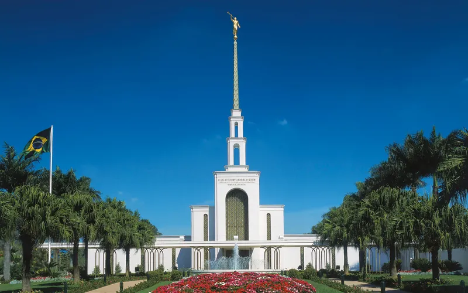
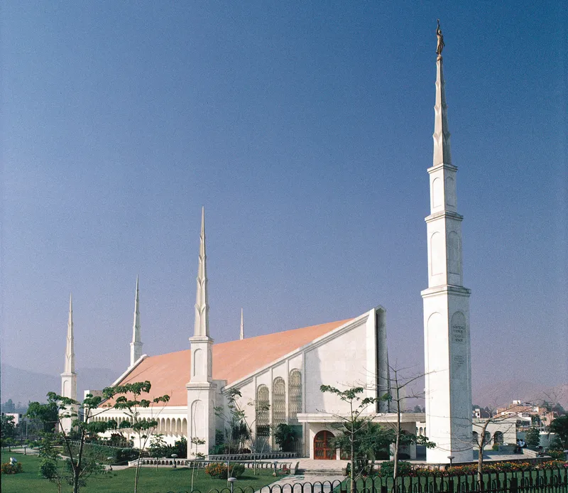
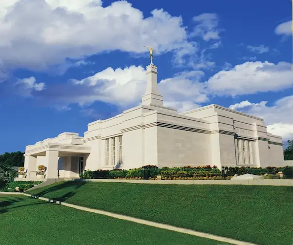

Álbum do Templo
Página Inicial
Antigo
Novo
Grande
Pequeno
Templos do Mundo
Templo de Salt Lake

Templo de São Paulo
Templo de Roma
Templo de Paris
Templo de Tóquio

Templo de Lima

Templo de Mérida
Templo de Buenos Aires
Templo de Oakland